Cómo entrar al sistema, cotizar, imprimir, facturar y entregar con el formato de cada empresa. Incluye el Formato Propet opcional y el Conduce.
Sistema https://doralexgroup.cloud
Fecha 21 de septiembre de 2026
Empresas Blue Elite, Piñaria, Dominion, Doralex, El Mayuma, Rempart
Realizado por Fausto Santana | Justech
1. Entrar al sistema
Abra el navegador y entre a https://doralexgroup.cloud.
Escriba el correo que le asignaron (por ejemplo nombre.apellido@inversionesdoralex.com).
Escriba su contraseña y pulse Iniciar sesión.
Si es el primer acceso, el sistema puede pedirle que cambie la contraseña. Hágalo y no la comparta.
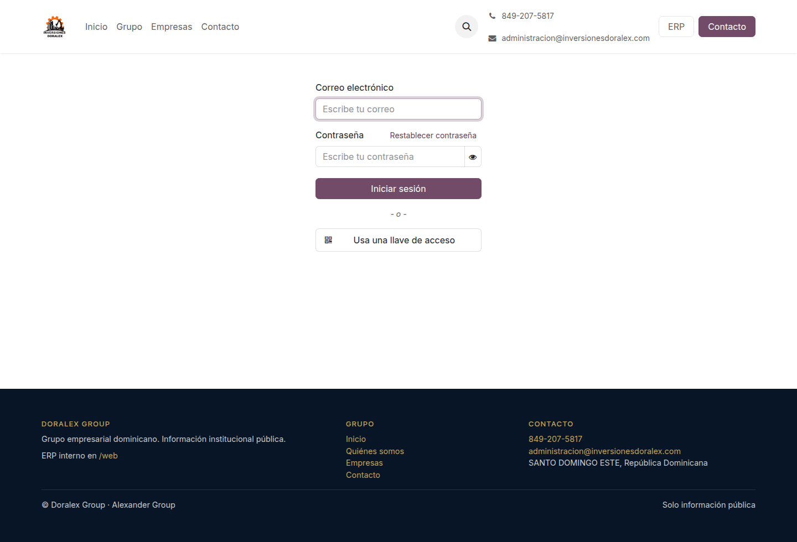
Figura 1. Inicio de sesión en doralexgroup.cloud
No pida ni envíe la contraseña por chat. Si la olvidó, avise a su supervisor o a Justech para restablecerla.
2. Pantalla de inicio y empresas
Después de entrar verá el menú de aplicaciones. Las que usará todos los días son Ventas, Compras, Inventario y, si tiene permiso, Contabilidad.
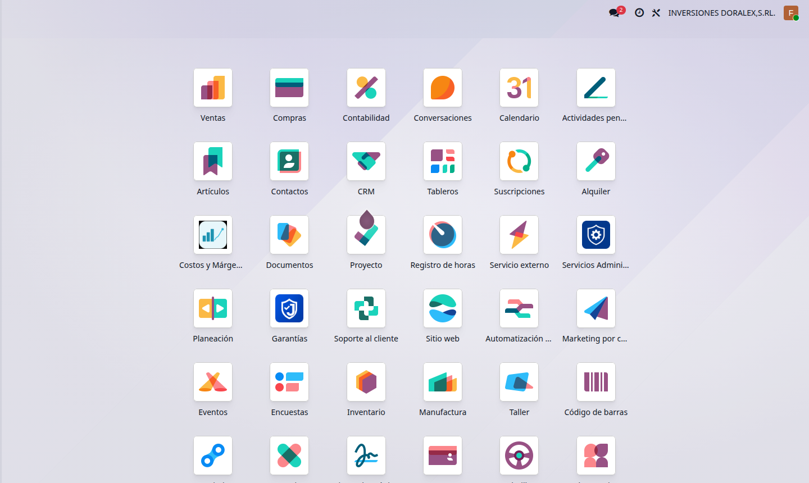
Figura 2. Menú de aplicaciones. Arriba a la derecha aparece la empresa activa.
Doralex Group tiene seis empresas. Antes de crear o imprimir un documento, confirme la empresa en la esquina superior derecha:
Empresa
Código en documentos
BLUE ELITE, S.R.L.
BLU
Comercializadora de Alimentos Piñaria, S.R.L.
PIN
Dominion Business, S.R.L.
DOM
Inversiones Doralex, S.R.L.
DOR
Inversiones El Mayuma, S.R.L.
MAY
Rempart Group S.R.L.
REM
Cada empresa tiene su propia papelería (logo, colores y pie). Si cotiza en Mayuma, el PDF sale con diseño Mayuma. Si cotiza en Doralex, sale con diseño Doralex.
3. Cotizaciones
Abra Ventas → Cotizaciones → Nuevo.
Elija el cliente, la lista de precios y las líneas (producto, cantidad, precio, impuesto).
Si el cliente le dio una orden de compra, escríbala en OC / PO.
Guarde. El número queda como DOR/SO/00016, MAY/SO/00007, etc.
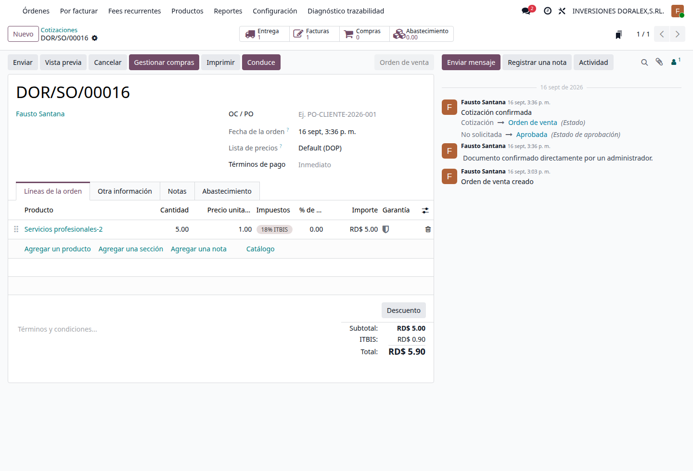
Figura 3. Cotización DOR/SO/00016. Botones de cabecera: Enviar, Imprimir y Conduce.
El PDF oficial de venta siempre se titula Cotización, aunque el pedido ya esté confirmado. No debe decir “Pedido de venta”.
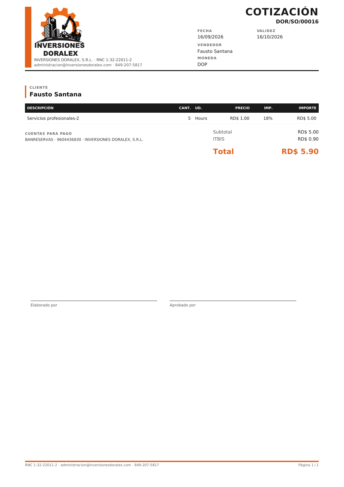
Figura 4. Formato oficial de cotización (papelería de Inversiones Doralex).
4. Campo OC / PO del cliente
OC / PO es el número de orden de compra que le dio el cliente. No es el NCF ni el número interno del pedido.
En pantalla el campo se llama OC / PO.
Ejemplo válido: PO-CLIENTE-2026-001.
Si está vacío, no se inventa uno. El PDF no debe rellenar ese espacio con el NCF ni con DOR/SO/….
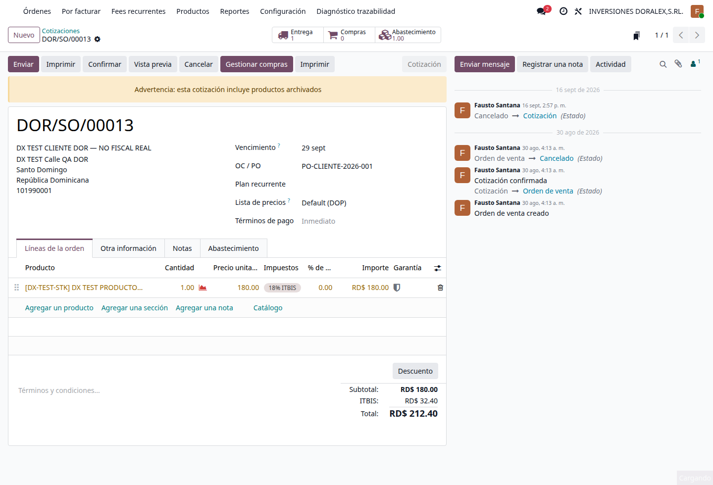
Figura 5. DOR/SO/00013 con OC / PO = PO-CLIENTE-2026-001, junto a la fecha y el cliente.
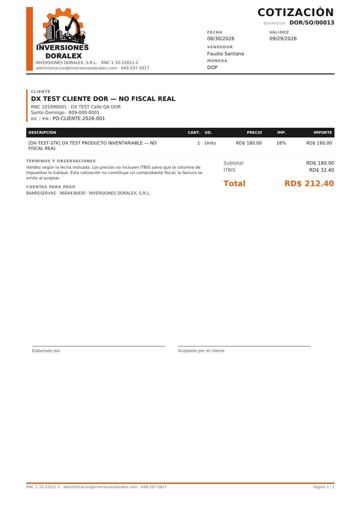
Figura 6. El mismo valor aparece en el PDF: OC / PO · PO-CLIENTE-2026-001. El comprobante fiscal no se toca.
OC / PO nunca reemplaza el Número de Comprobante Fiscal, Gubernamental o de Régimen Especial de la factura.
5. Imprimir una cotización
En la cotización pulse Imprimir. Se abre un cuadro con tres formatos. El primero es el oficial.
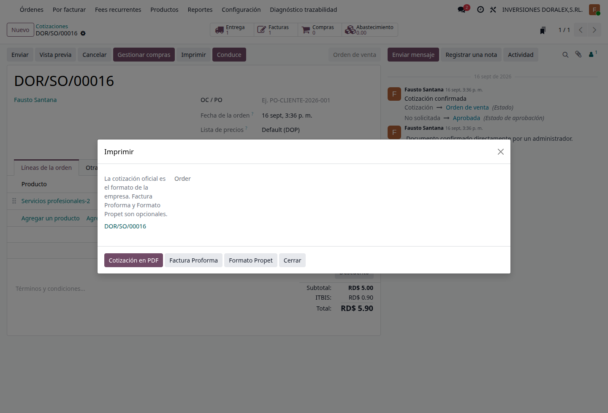
Figura 7. Imprimir en venta: Cotización en PDF (oficial), Factura Proforma y Formato Propet (opcionales).
Botón
Qué es
Cuándo usarlo
Cotización en PDF
Formato oficial de la empresa. Título: COTIZACIÓN.
Siempre que envíe o imprima la cotización al cliente.
Factura Proforma
Mismo pedido, identificado como FACTURA PROFORMA. No crea asiento ni consume NCF.
Cuando el cliente pide una proforma. Es opcional.
Formato Propet
El mismo documento, con columnas fiscales extra (precio sin ITBIS, ITBIS, precio con ITBIS).
Solo si el cliente o el área comercial lo piden. Nunca es el documento oficial.
No hay botones sueltos de Propet o Proforma en la cabecera. Todo sale de Imprimir.
6. Formato Propet (opcional)
Propet no es un documento nuevo. No crea otro número, no cambia la cotización ni la factura. Solo cambia cómo se ve el PDF.
En una cotización el título del PDF sigue siendo COTIZACIÓN + el número real (MAY/SO/00007, DOR/SO/00016…).
En una factura el título sigue siendo FACTURA + el número real.
El PDF nunca debe decir “FORMATO PROPET” como título. Ese nombre es solo el de la opción de impresión.
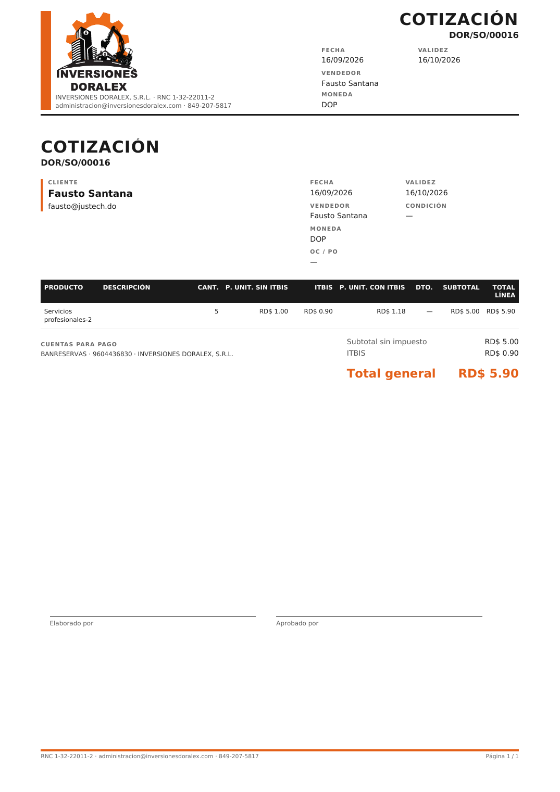
Figura 8. Formato Propet de DOR/SO/00016. Título COTIZACIÓN. Columnas fiscales extra.
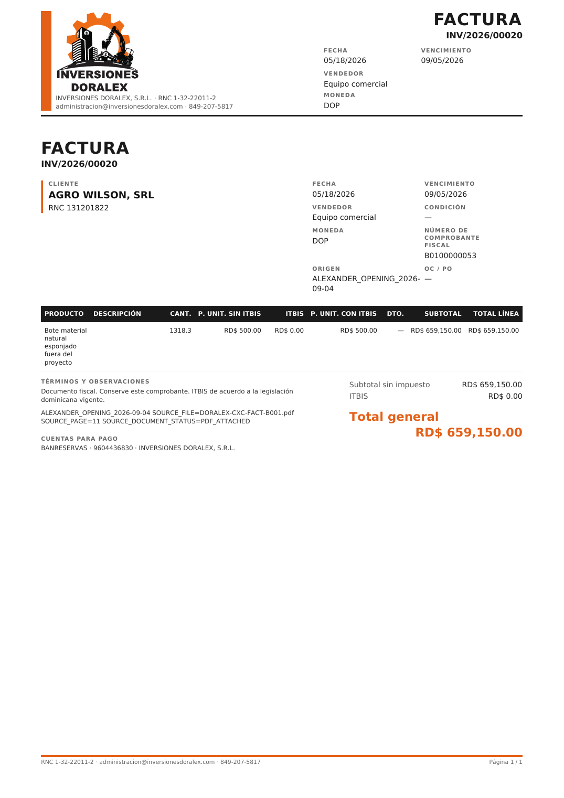
Figura 9. Formato Propet de INV/2026/00020. Título FACTURA. El comprobante fiscal B0100000053 se mantiene.
7. Conduce de entrega
El Conduce no se imprime desde Imprimir de la cotización. Es el documento de la entrega.
Confirme el pedido (pasa a orden de venta).
Pulse Crear Conduce o Conduce en la cabecera. Eso abre o crea la entrega (DOR/OUT/00015).
En la entrega, use el botón Conduce para imprimir el PDF.
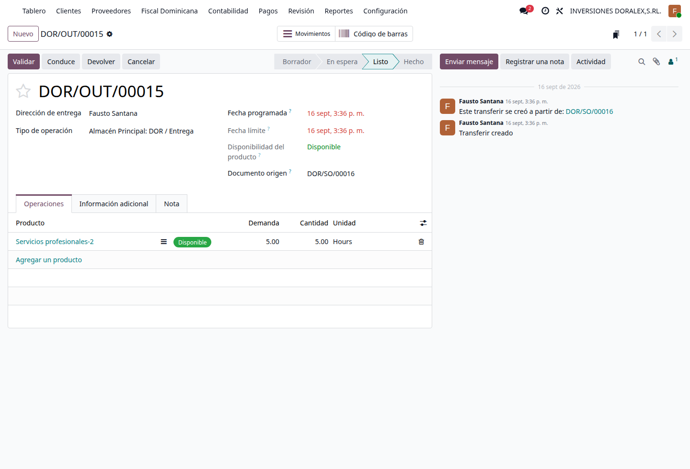
Figura 10. Entrega DOR/OUT/00015. El botón Conduce imprime el documento logístico.
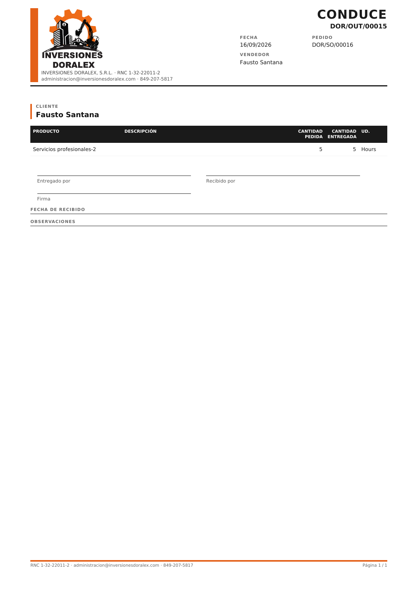
Figura 11. PDF del Conduce: mismo diseño de cotización de la empresa, título CONDUCE, cantidades pedida y entregada, sin precios.
El Conduce sí muestra
El Conduce no muestra
Logo y datos de la empresa de la entrega, cliente, pedido origen, OC / PO si existe, producto, descripción, cantidad pedida, cantidad entregada, unidad, firmas.
Precio, ITBIS, descuento, subtotal o total. No es una factura.
Si entrega 6 de 10, el Conduce muestra 10 pedidas y 6 entregadas. El pendiente sigue en Odoo con el backorder normal. No se crea un segundo sistema de pendientes.
8. Facturas y comprobantes
La factura oficial usa el diseño de la empresa. En Imprimir el primer botón es Factura en PDF. Formato Propet queda a la derecha, opcional.
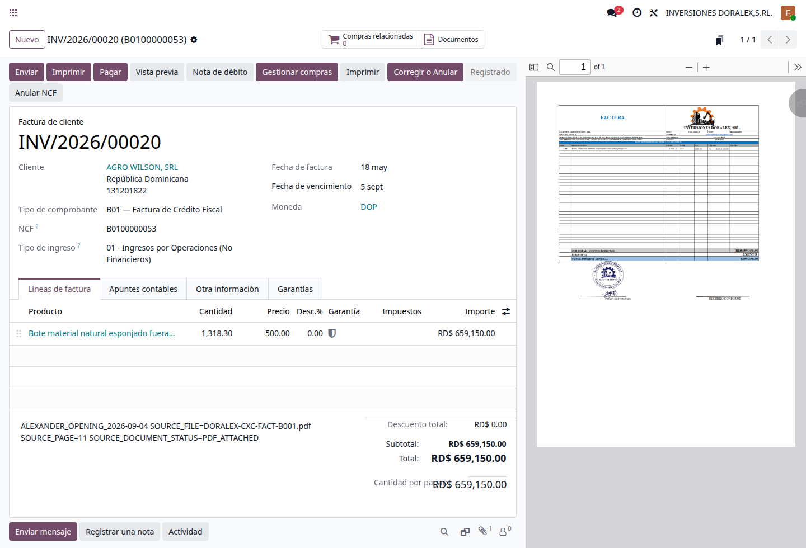
Figura 12. Factura INV/2026/00020. El comprobante B0100000053 está en su propio campo. No se pisa con OC / PO.
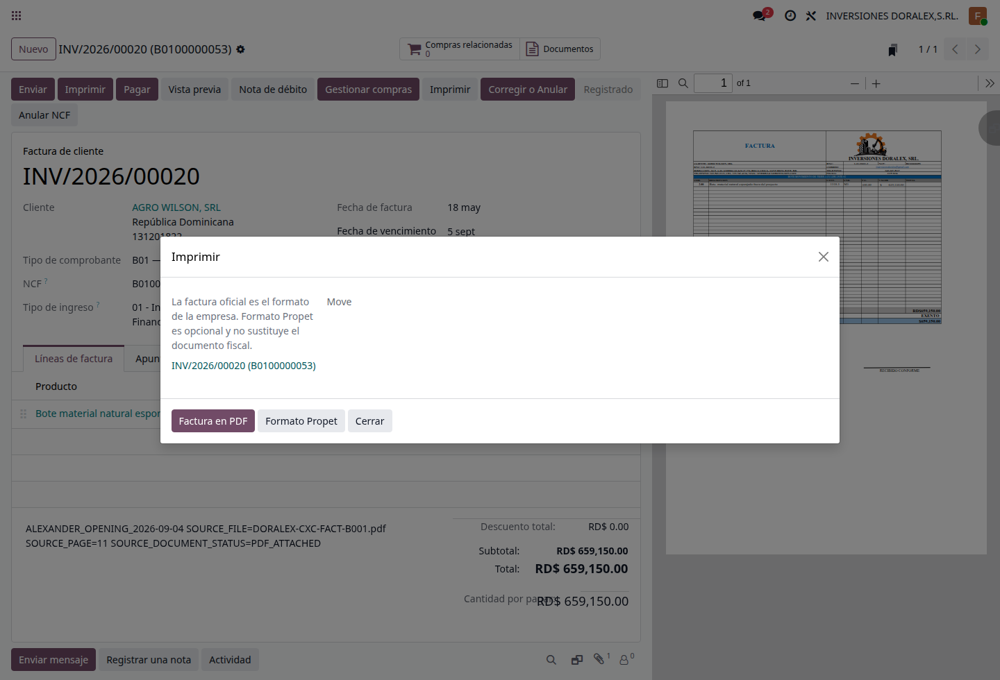
Figura 13. Imprimir en factura: Factura en PDF (oficial) y Formato Propet (opcional). El texto del cuadro lo dice: Propet no sustituye el documento fiscal.
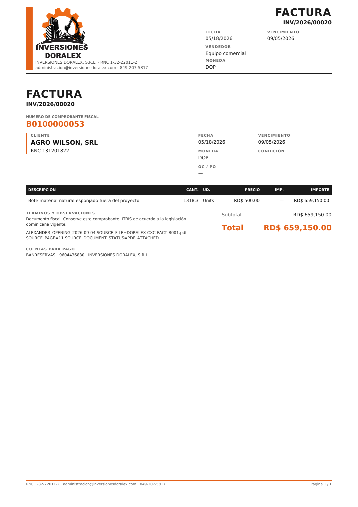
Figura 14. Factura oficial. El rótulo es Número de Comprobante Fiscal, no la palabra “NCF”.
El nombre del comprobante depende del tipo:
Tipo
Prefijos habituales
Texto en el PDF
Fiscal (crédito fiscal, consumidor, etc.)
B01, E31, B02, E32…
Número de Comprobante Fiscal
Gubernamental
B15, E45
Número de Comprobante Gubernamental
Régimen especial
B14, E44
Número de Comprobante de Régimen Especial
Si la factura aún no tiene número, el PDF dice “Pendiente de número de comprobante…” del tipo que corresponda. No se imprime un NCF inventado.
9. Reglas que no se pueden romper
El formato oficial de venta es la Cotización de la empresa. El de factura es la Factura en PDF.
Formato Propet nunca es el oficial y no se manda como único adjunto fiscal.
No use el Conduce para cobrar. No use la factura para entregar mercancía.
OC / PO es del cliente. El comprobante fiscal es de DGII. Son campos distintos.
No cambie de empresa a mitad de un documento. Cree el documento en la empresa correcta.
No publique facturas ni asigne NCF “para probar”. Si necesita una prueba, pídala a Justech en DEV.
10. Ayuda y crédito
Si un PDF sale en blanco, con otra empresa o con el título incorrecto, tome captura de la pantalla y del PDF y envíelos a Justech. Incluya el número del documento (DOR/SO/…, INV/…, DOR/OUT/…).
Usuarios operativos de Doralex (correo = usuario de Odoo):
Persona
Correo / usuario
Uso principal
Luis Joel Aquino Casado
luis.aquino@inversionesdoralex.com
Ventas y compras
Janny Chantal Montero
janny.montero@inversionesdoralex.com
Ventas y compras
Elianny Nicole Sanchez Javier
elianny.sanchez@inversionesdoralex.com
Ventas y compras
Leopordo Jimenez
leopordo.jimenez@inversionesdoralex.com
Ventas y compras
Geilin Rosario Suero
geilin.rosario@inversionesdoralex.com
Ventas, compras y facturación
Alexander Piña Aquino
alexander.pina@inversionesdoralex.com
Administración
Manual de usuario Doralex Group · Realizado por Fausto Santana | Justech · Uso interno · No contiene contraseñas